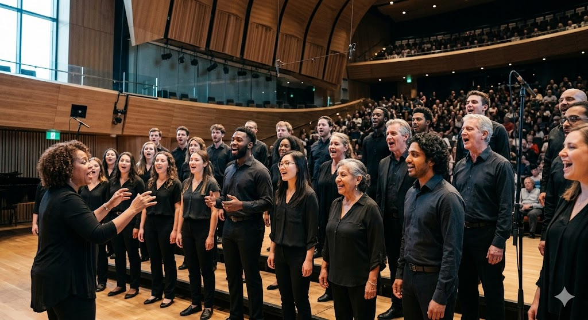
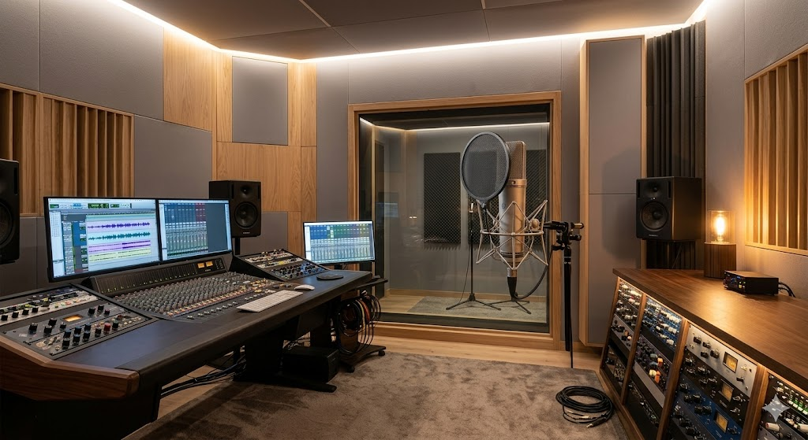
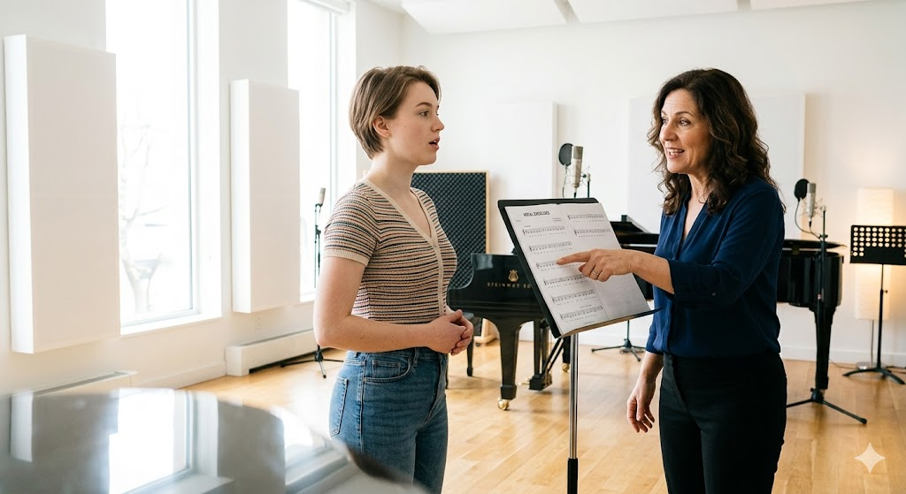

What Is Singing?
Singing is the act of producing musical sounds with the human voice, shaping pitch, rhythm, and timbre into an expressive art form. It is one of the oldest and most universal forms of human expression — every culture on Earth has a tradition of vocal music. From the resonant vibrato of an opera soprano to the raw, soulful riffs of a blues vocalist, singing encompasses an enormous spectrum of styles, techniques, and emotions.
At its core, singing is the coordination of dozens of muscles, the diaphragm, the lungs, the larynx, the soft palate, the tongue, and the lips, all working in harmony to create sound that communicates what words alone cannot. It is simultaneously a physical skill, a creative craft, and a deeply personal form of self-expression.
AI Image Prompt — "A photorealistic close-up portrait of a person singing passionately into a vintage silver microphone, warm amber stage lighting from above, dramatic shadows, shallow depth of field, 4K, cinematic."
Core Elements of Singing
- Pitch: The ability to hit the correct musical note consistently, requiring fine motor control of the vocal folds.
- Breath Support: Using the diaphragm to maintain a steady column of air that powers the voice without strain.
- Resonance: Shaping the vocal tract — mouth, throat, and chest — to amplify and color the sound naturally.
- Diction: Articulating words clearly so lyrics are understood even at full vocal volume.
- Dynamics: Controlling volume and intensity, from a soft pianissimo whisper to a powerful forte climax.
- Expression: Communicating the emotional content of a song through phrasing, timing, and tone color.
Who Sings?
Singing belongs to everyone. While professional vocalists dedicate years to formal training, millions more sing in choirs, at karaoke nights, in churches, in the car, and in the shower — and all of it counts. The singing community spans amateurs and icons, children and retirees, classically trained soloists and self-taught indie artists.
Professionally, singers are categorized by voice type — a system developed in Western classical tradition but adapted across genres worldwide. Understanding your voice type helps you choose repertoire that flatters your range and protects your vocal health over a lifetime of singing.

AI Image Prompt — "A photorealistic wide-angle shot of a large diverse choir of 40 people singing with passion in a grand concert hall with warm lighting, wearing formal black attire, dramatic ceiling architecture visible."
Voice Types
| Voice Type | Range | Typical Sound | Famous Example |
|---|---|---|---|
| Soprano | C4 – C6 | Bright, soaring, clear | Maria Callas |
| Mezzo-Soprano | A3 – A5 | Warm, rich, full | Adele |
| Contralto | E3 – E5 | Deep, dark, powerful | Tracy Chapman |
| Tenor | C3 – C5 | Bright, ringing, heroic | Pavarotti |
| Baritone | G2 – G4 | Warm, resonant, versatile | Frank Sinatra |
| Bass | E2 – E4 | Deep, authoritative, full | Barry White |
Find Your Voice — Quick Quiz
When to Sing?
The voice is a living instrument — it responds to sleep, hydration, stress, and the time of day. Most professional vocalists structure their practice deliberately rather than singing whenever the mood strikes. Building a thoughtful schedule protects the delicate tissues of the larynx and produces faster, more sustainable improvement.
Mornings are typically the hardest time to sing: the vocal folds are stiff after sleep and the body hasn't fully warmed up. Many singers avoid demanding repertoire before noon. Late morning to early afternoon is often the "golden window" when the voice is warmed but not yet fatigued. Evening performances are standard in the industry, which is why professionals use afternoon nap rituals and warm-up routines to arrive in peak condition.

AI Image Prompt — "A photorealistic cozy music practice room, upright piano, metronome on top, open sheet music on a stand, warm golden afternoon sunlight through large windows, houseplants, no people, aesthetic and inviting."
Ideal Weekly Practice Schedule
| Day | Focus | Duration | Notes |
|---|---|---|---|
| Monday | Technique — scales & arpeggios | 30 min | Start with gentle lip trills |
| Tuesday | Repertoire — new material | 45 min | Slow practice, focus on pitch |
| Wednesday | Rest or light humming only | 10 min max | Vocal recovery is essential |
| Thursday | Dynamics & expression | 40 min | Emotional storytelling focus |
| Friday | Full run-through performance | 60 min | Simulate concert conditions |
| Saturday | Sight-reading / ear training | 30 min | Piano or app assistance helpful |
| Sunday | Complete rest | — | Hydrate and sleep well |
Seasonal Considerations
- Winter: Cold air and dry heating dry out the vocal cords. Use a humidifier and increase water intake. Avoid singing outdoors in freezing temperatures.
- Spring: Allergy season is a vocalist's enemy. Antihistamines can dry the voice; consult a doctor about vocal-safe allergy management.
- Summer: Heat and humidity can actually help the voice feel more open, but air conditioning causes dryness. Carry water everywhere.
- Fall: The ideal season for most singers — moderate humidity, cooler temperatures, and the start of concert season.
Where to Sing?
The acoustic environment fundamentally shapes how a voice sounds and feels. Hard surfaces like tile create lively, reverberant spaces that make the voice sound fuller and more resonant — which is exactly why the shower produces such a pleasant singing experience. Purpose-built performance and recording spaces are engineered to control these reflections deliberately.
Whether you are practicing at home, auditioning at a studio, or performing at a venue, choosing the right environment for the right activity dramatically impacts results. Below are the most common singing environments and what makes each unique.
AI Image Prompt — "A photorealistic professional vocal recording studio booth, large-diaphragm condenser microphone on a stand, acoustic foam walls, pop filter, warm LED lighting, control room glass panel behind, cinematic look."
Singing Venues Compared
| Venue | Acoustics | Best For | Cost |
|---|---|---|---|
| Shower / Bathroom | Very live, lots of reverb | Casual warm-ups, confidence | Free |
| Living Room | Moderate, soft furnishings absorb | Daily practice, learning songs | Free |
| Church / Worship Hall | Long reverb, expansive sound | Choral rehearsal, performance | Often free for members |
| Recording Studio | Dead (controlled), very dry | Professional recording, demos | $50 – $300 / hr |
| Concert Hall | Engineered for clarity & projection | Classical, opera, large ensemble | Rental fees vary widely |
| Open Mic Venue / Bar | Variable, PA-dependent | Performance experience, stage fright | Usually free to perform |
Find Singing Opportunities Near You
How to Start Singing
Learning to sing well is less about raw talent and far more about disciplined, structured practice. The voice is a muscular instrument — it responds to training the same way any other muscle does: with gradual, consistent work. The biggest mistake beginners make is skipping foundational technique and jumping straight to performing difficult songs, which can lead to strain or bad habits that take years to correct.
The journey begins with three pillars: posture, breath, and resonance. Once those are stable, pitch accuracy, range expansion, and stylistic expression follow naturally. Below is a structured beginner roadmap and the core exercises used by professional vocal coaches.

AI Image Prompt — "A photorealistic image of a professional vocal coach, middle-aged woman, demonstrating breathing posture to a young adult male student standing at a microphone in a bright, modern music studio. Natural light, warm tones."
Beginner Roadmap
- Posture First: Stand with feet shoulder-width apart, knees slightly relaxed, spine tall, chin parallel to the floor. Good posture opens the airway and allows full lung expansion — everything else depends on it.
- Master Diaphragmatic Breathing: Place your hand on your belly. When you inhale, your belly should expand outward, not your chest rise upward. Practice slow inhales (4 counts) and controlled exhales (8 counts) on a hissing sound daily for two weeks before singing a single note.
- Warm Up Every Single Time: Begin with lip trills (a motorboat sound) ascending and descending scales. Then move to "mum" or "nay" vocalises. Never jump into full voice singing cold.
- Work Scales Slowly: Use a piano app or keyboard. Sing 5-note scales (do-re-mi-fa-sol-fa-mi-re-do) on various vowels ("ah," "ee," "oh"). Move up by half-steps until you feel tension, then stop.
- Record Yourself: This is the single most powerful practice tool available. Most beginners are shocked by the difference between how they sound internally and externally. Listen back critically and note pitch issues without judgment.
- Learn Simple Repertoire: Choose songs within your comfortable range and in genres you love. Don't attempt challenging material until technique is solid.
- Seek Feedback: Find a teacher, join a choir, or attend open mics. Outside ears catch issues you cannot hear yourself.
Essential Vocal Exercises
| Exercise | Purpose | How Long |
|---|---|---|
| Lip Trills / Bubble | Warms up cords gently, builds breath support | 3–5 min |
| Humming | Activates resonance, very gentle on folds | 2–3 min |
| "Nay Nay" Exercise | Opens nasal resonance, brightens tone | 3 min |
| Sirens (glissando) | Smooths the passaggio (register break) | 2–3 min |
| Tongue Twisters | Improves diction and articulation speed | 2 min |
| Sustained Vowels | Builds breath control and pitch stability | 5 min |
Why Sing?
The reasons people sing are as varied as the people themselves. For some, it is the pursuit of artistic excellence — the thrill of mastering a difficult aria or nailing a complex jazz improvisation. For others, it is purely social: the bonding that happens in a choir, a band, or around a campfire is unlike anything else. And for many, singing is simply therapeutic — a release valve for emotion that words alone cannot discharge.
Beyond the personal experience, science has consistently confirmed that singing produces measurable physiological and psychological benefits. It is, in a very real sense, one of the most holistic and accessible forms of self-care available to humans — and it requires no equipment, no membership, and no prior skill to begin.
AI Image Prompt — "A photorealistic candid photo of a joyful young woman singing with her eyes closed and a huge smile, outdoor festival stage, colorful purple and gold stage lights, summer night, warm atmosphere, crowd visible blurred behind."
Proven Benefits of Singing
🧠 Mental Health
Singing triggers the release of endorphins and oxytocin — the brain's "feel-good" chemicals. Regular singers report lower levels of anxiety and depression, and higher overall life satisfaction.
💪 Physical Health
Singing is an aerobic exercise. It strengthens the diaphragm, improves lung capacity, and even improves posture and core strength over time. Choir singers show improved immune function compared to non-singers.
🤝 Social Connection
Group singing synchronizes heartbeats among participants. Choirs and singing groups consistently show stronger social bonds and lower loneliness ratings than equivalent non-singing social groups.
🎓 Cognitive Benefits
Learning lyrics and musical notation strengthens memory. Children who receive vocal music training consistently outperform peers in reading, language acquisition, and mathematical reasoning.
😴 Better Sleep
Regular singing exercises the muscles of the throat and soft palate, reducing snoring and symptoms of mild sleep apnea, leading to deeper, more restorative sleep.
🎭 Emotional Expression
Singing gives form and language to emotions that are difficult to articulate. For grief, joy, longing, or gratitude — music reaches where words fall short.
Bottom line: Singing doesn't require a perfect voice. It doesn't require years of training or a stage or an audience. It only requires a willingness to make sound — and in that sound, to find yourself.
AI Prompts Used
This page was built with assistance from Claude (Anthropic, claude-sonnet-4-6). Below is a complete log of the prompts used to generate the HTML, CSS, JavaScript, and written content. All images were generated with AI using the prompts listed on their respective pages.
Structure & Code Prompts
"I have a midterm assignment to build a single-page hobby website about singing. Here is my existing code and the rubric. Please do a full rewrite hitting all rubric requirements: embedded stylesheet, CRAP principles, deep plum/gold color scheme different from any main site, section hiding via JS, active nav state, all 7 sections (What/Who/When/Where/How/Why/AI Prompts) each with at minimum 3 items including a figure, validation links in footer, footer design firm link, a contact/quiz form in at least two sections, rich paragraph content, tables, and proper HTML5 structure."
"Write rich, detailed paragraph content for each section of a singing hobby website: What (explain what singing is), Who (voice types), When (practice scheduling and seasons), Where (acoustic environments), How (beginner technique roadmap), Why (benefits of singing). Each section needs at least two substantial paragraphs and enough detail to score full marks on a college rubric."
"Add an active CSS class to the currently selected nav link in a JS showSection() function that hides all sections and shows the target one. The active nav link should be visually distinct with a gold border and background tint."
"Add HTML, CSS, and WAVE accessibility validation links to the footer of my page. The HTML validator should point to https://validator.w3.org, the CSS validator to https://jigsaw.w3.org/css-validator/, and the accessibility checker to https://wave.webaim.org. Style them as rounded pill buttons matching the page's gold-on-dark theme."
"Create a 3-column CSS grid of stat boxes for the What section showing interesting singing facts, styled to match a deep plum and gold color scheme with large Cormorant Garamond numerals."
Image Generation Prompts
| Image | Prompt Used | Tool |
|---|---|---|
| singing-main.jpg | Photorealistic close-up of singer at vintage silver microphone, amber stage lighting, 4K cinematic | Gemini Image |
| choir.jpg | Diverse choir of 40 people in concert hall, formal black attire, dramatic architecture | Gemini Image |
| practice-schedule.jpg | Cozy music practice room, upright piano, metronome, sheet music stand, golden afternoon light | Gemini Image |
| studio.jpg | Professional vocal recording studio booth, large-diaphragm condenser mic, acoustic foam, control room glass | Gemini Image |
| vocal-lesson.jpg | Vocal coach demonstrating posture to student at microphone, bright modern music studio, natural light | Gemini Image |
| joy-of-singing.jpg | Joyful woman singing at outdoor festival, eyes closed, colorful purple and gold stage lights, summer night | Gemini Image |